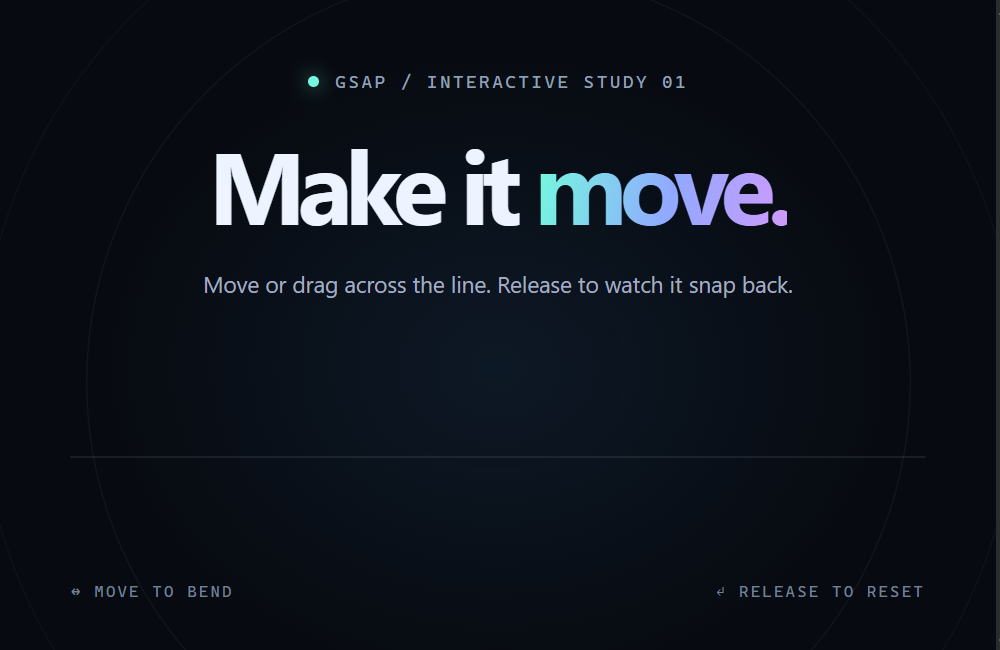
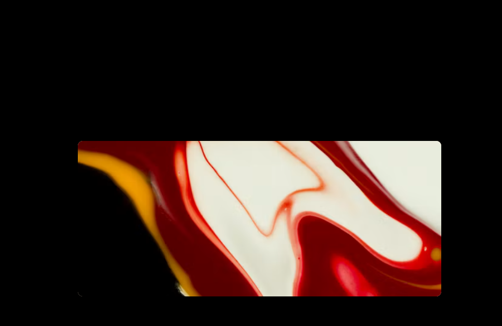

TRY IT LIVE01 / INTERACTIVE SVG
Elastic Line
Bend a glowing SVG curve with your pointer or touch, then release it to snap back with an elastic ease.
- GSAP
- SVG
- POINTER EVENTS
01 FEATURED PROJECT
A small study in kinetic type, rhythm, and interaction - built with GSAP.
Explore the studyTHE IDEA / 01
A focused exploration of animated typography, continuous movement, and carefully timed reveals - turning one simple message into a living visual.
DISCIPLINEKINETIC TYPE
TOOLSGSAP / JAVASCRIPT
FOCUSSCROLL MOTION
SELECTED WORK / 02 EXPERIMENTS
Small, hands-on studies in motion and interaction. Open each one to try it yourself.

TRY IT LIVE01 / INTERACTIVE SVG
Bend a glowing SVG curve with your pointer or touch, then release it to snap back with an elastic ease.

TRY IT LIVE02 / POINTER INTERACTION
A moving light follows the pointer across the image while a custom cursor and subtle 3D tilt respond to movement.
ABOUT THIS COLLECTION
This collection brings together hands-on experiments with GSAP and JavaScript - from elastic SVG motion to pointer-driven image interactions.
CONNECT ON GITHUB